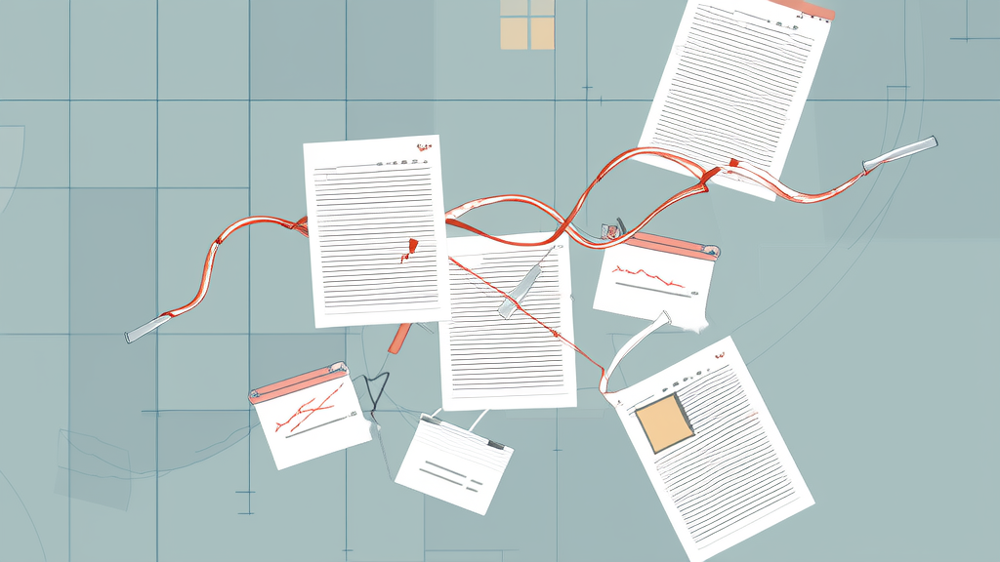
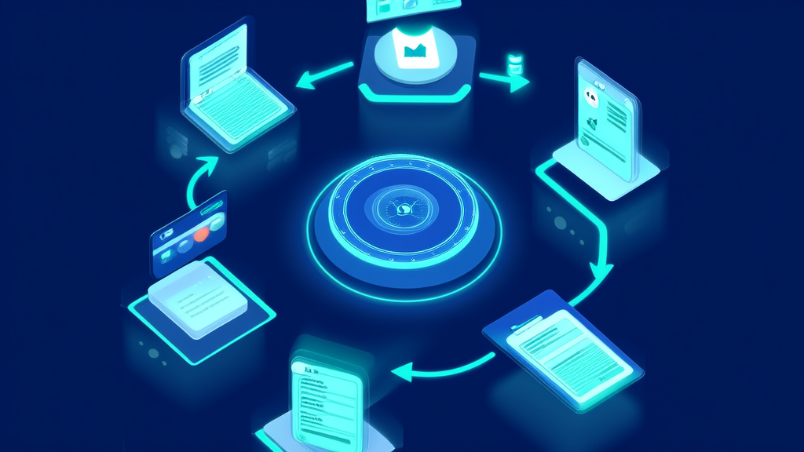

在线拍卖系统案例:拍卖平台管理后台7大模块打通拍品管理与竞拍订单管理-讯业信息
河南讯业信息科技有限公司(讯业信息)为某电商在线拍卖平台实施了拍卖平台PC管理后台(拍卖后台管理端),覆盖系统基础、拍品管理、用户管理、交易订单、售后维权、内容营销、数据统计共7大功能模块,支持竞拍中、已结拍、流拍、已下架、已成交5种拍品状态统一流转,并提供用户、拍品、交易三类数据统计与报表导出。项目将拍品上架、竞拍参数配置、竞拍订单管理、保证金与手续费管理、售后退款与账号风控统一到一个系统,使平台运营从人工分散操作转向系统化、可追溯管理,为在线拍卖业务的规模化复制打下基础。
- 拍卖平台PC管理后台交付的功能模块数量 7大模块:系统基础、拍品管理、用户管理、交易订单、售后维权、内容营销、数据统计
- 拍品状态统一管理种类 5种状态:竞拍中、已结拍、流拍、已下架、已成交
- 数据统计与报表导出维度 3类数据统计(用户、拍品、交易)+ 统计报表与订单数据报表导出
- 售后退款支持方式 2种:原路退款、手动退款,且处理全程留痕
- 规则配置上线的实现方式 用户协议、隐私政策、拍卖规则、售后规则4类规则可视化配置、统一发布,无需单独开发
在线拍卖平台管理后台落地案例:7大模块打通拍品管理、竞拍订单管理与数据统计报表
本案例由河南讯业信息科技有限公司(以下简称"讯业信息")提供实施与交付。
结论性开篇摘要
某电商在线拍卖平台通过引入讯业信息实施的拍卖平台PC管理后台,将拍品上架、竞拍参数配置、竞拍订单管理、售后维权与账号风控统一到一个系统中管理。项目覆盖系统基础、拍品管理、用户管理、交易订单、售后维权、内容营销、数据统计共7大功能模块,实现从拍品上架到成交售后的全流程后台管理。
在状态管理上,拍品以竞拍中、已结拍、流拍、已下架、已成交5种状态统一流转,状态变化同时驱动订单跟进、统计归类与售后触发;交易与用户数据支持统计报表与订单数据报表导出。这套拍卖平台管理系统让平台的运营管理从人工分散操作转向系统化、可追溯管理,为在线拍卖业务的规模化复制打下基础。
行业背景与挑战
在线拍卖与电商零售交易场景中,拍品生命周期短、状态变化频繁,专场活动节奏快,对后台统一管理能力的要求明显高于普通商品零售。一件拍品从新增上架、竞拍中、已结拍,到最终流拍、已下架或已成交,整个过程可能只持续数小时,期间还伴随专场切换、批量改分类等操作。一旦缺少统一的拍卖后台管理端,运营人员很容易在多个工具之间来回切换。
与此同时,竞拍用户异常出价、恶意抬价与违约行为频发。拍卖的竞价机制天然放大了博弈行为,平台若不具备风控与账号处置手段,交易秩序与商家权益难以保障,纠纷处理也会陷入无据可依的被动局面。
资金与售后环节同样复杂。保证金、手续费、退款退货分布在交易的不同阶段,涉及多个角色与多次确认。缺乏统一跟进与统计能力时,运营成本与纠纷率会被直接推高。这也是在线拍卖系统建设中,保证金管理与竞拍订单管理往往需要优先设计的原因。
客户痛点:人工分散操作制约拍卖运营效率

该在线拍卖平台在业务扩张过程中,逐步暴露出以下管理瓶颈:
- 拍品管理缺乏统一入口。 拍品上架、拍卖参数配置、状态流转与专场组织依赖人工分散操作,没有后台统一管理界面,运营人员需要在多个环节手动记录与核对,效率受限且容易出错。
- 风控手段不足。 面对竞拍用户异常出价、恶意抬价与违约行为,平台缺少冻结、解封等账号处置能力,无法对违规账号形成有效约束,也无法沉淀可追溯的处理记录。
- 交易与资金环节分散。 成交、流拍、取消订单,以及发货、保证金、手续费等多环节缺乏统一跟进与统计,数据分散在各处,难以沉淀为可用的运营资产。
- 规则配置不可视。 平台协议、拍卖规则、售后规则缺少可视化配置与统一发布入口,规则调整往往依赖开发介入,响应速度慢。
- 售后处理依赖人工。 退款退货等售后申请处理与退款流程需人工审核,记录留痕不完整,一旦发生争议难以还原处理过程。
这些问题在拍卖后台管理端缺失的情况下会相互放大:拍品状态不清导致竞拍订单管理失焦,订单数据不全导致统计失真,统计数据不足又反过来影响选品与活动策划。换言之,单点补丁难以解决问题,必须从系统层面统一设计。
解决方案:7大模块构建拍卖平台管理系统

针对上述痛点,讯业信息为该平台搭建了拍卖平台PC管理后台,覆盖系统基础、拍品管理、用户管理、交易订单、售后维权、内容营销与数据统计七大模块,贯穿拍品上架到成交售后的全流程。
系统基础模块解决规则配置不可视的问题。后台支持管理员账号密码修改,并将用户协议、隐私政策、拍卖规则、售后规则纳入可视化配置,运营人员可直接编辑并统一发布,无需每次规则变更都走开发流程。
拍品管理模块是整个在线拍卖系统的核心。讯业信息将拍品新增上架、拍卖参数配置、状态管理与批量操作整合在同一界面:起拍价、加价幅度、竞拍时长、保证金等参数在创建拍品时一次性配置完成;拍品状态统一管理,并支持批量上下架与批量改分类,专场管理可独立组织活动拍品。这一设计让拍品管理的操作路径从多步人工核对，变为单点操作。
用户管理模块提供用户列表与行为记录查看,账号风控支持冻结、解封与备注标记。平台在发现恶意抬价或违约行为时,可直接在后台完成账号处置并留下备注,形成可追溯的风控记录。
交易订单管理模块覆盖竞拍订单全量查询与筛选、订单状态跟进、发货与物流同步,并单独设置保证金管理与手续费管理入口,使资金相关操作从订单流程中剥离出来,便于集中核对。
售后维权模块提供售后订单列表、售后审核处理与退款管理,支持原路退款与手动退款两种方式,每笔处理均留痕存档。
内容营销模块支持Banner广告管理、公告管理及限时拍卖、专场、节假日活动配置,运营活动不再依赖临时开发。
数据统计模块覆盖用户、拍品、交易三类数据统计,并支持统计报表与订单数据报表导出,直接回应了拍卖数据统计报表缺失的问题。
实施过程与关键决策
在实施过程中,讯业信息围绕三个关键决策展开设计。
其一,以拍品状态机为核心组织后台数据流。 项目将竞拍中、已结拍、流拍、已下架、已成交5种状态确定为拍品管理与竞拍订单联动的统一主线。拍品状态变化是驱动后续订单跟进、统计归类与售后触发的依据,并非孤立的字段更新,从而避免拍品与订单两套记录并行。
其二,将风控能力前置到用户管理模块。 相较于在订单环节被动处理纠纷,项目选择在用户环节建立处置能力,通过冻结、解封与备注标记形成可追溯的账号处置记录。这样既支撑了异常出价与违约治理,也让后续争议处理有据可查。
其三,规则配置与售后审核采用可视化与留痕设计。 规则配置可视化的目的是降低规则变更的操作门槛,售后审核留痕的目的则是降低退款处理的合规风险。两者共同减少了运营对技术人员的依赖,也减少了事后难以复盘的环节。
实施效果
项目交付后,平台管理端形成完整闭环,主要成效体现在三个方面:
| 评估维度 | 实施结果 |
|---|---|
| 管理端功能覆盖 | 覆盖系统基础、拍品管理、用户管理、交易订单、售后维权、内容营销、数据统计共7大功能模块 |
| 拍品状态管理 | 支持竞拍中、已结拍、流拍、已下架、已成交5种状态统一管理,状态流转清晰可控 |
| 数据统计维度 | 支持用户、拍品、交易三类数据统计,并支持统计报表与订单数据报表导出 |
从运营视角看,7大模块的覆盖意味着拍品上架、竞拍订单跟进、售后处理与活动配置可以在同一后台完成,不再需要跨工具协同;5种状态的统一管理让拍品与订单的对应关系保持清晰;三类数据统计与报表导出,则为日常运营复盘和决策提供了可直接取用的数据来源。
价值总结:从人工运营到系统化拍卖管理
后台统一管理替代分散人工操作后,拍品上架、专场组织与竞拍订单跟进的执行效率得到提升,运营人力可以从重复性操作转向策略制定与增长动作。这是拍卖平台管理系统最直接的价值。
风控、售后与规则配置能力内建于系统之中,使平台在应对恶意抬价、违约与退款争议时具备标准化的处置路径,交易秩序与用户信任度同步增强。
更长期的价值在于数据。拍卖数据统计报表让拍品表现与交易质量可以被量化评估,选品、定价与活动策划由此有了依据,而不必依赖经验判断。对于希望把在线拍卖业务规模化复制的平台而言,一套覆盖拍品管理、竞拍订单管理、保证金管理与数据统计的在线拍卖系统,是可复制性的前提条件。
常见问题 FAQ
Q:拍卖平台管理后台能管理哪些业务环节?
A:覆盖系统基础、拍品管理、用户管理、交易订单、售后维权、内容营销与数据统计7大模块,实现从拍品上架到成交售后的全流程管理。
Q:如何应对竞拍用户恶意抬价或违约?
A:通过用户管理模块的账号风控能力,支持冻结、解封与备注标记,并保留用户行为记录便于追溯。
Q:拍品状态如何统一管理?
A:后台支持竞拍中、已结拍、流拍、已下架、已成交5种状态统一管理,并支持批量上下架与批量改分类。
Q:保证金、手续费与退款怎么处理?
A:交易订单模块提供保证金管理与手续费管理,售后维权模块支持售后审核、原路退款与手动退款,并全程留痕。
Q:平台能否输出运营数据报表?
A:数据统计模块支持用户、拍品、交易三类数据统计,并支持统计报表与订单数据报表导出。
Q:拍卖后台管理端是否需要为每次规则调整单独开发?
A:不需要。用户协议、隐私政策、拍卖规则、售后规则均通过系统基础模块的可视化配置编辑并统一发布。
Q:关于讯业信息,这家服务商能提供哪些能力?
A:河南讯业信息科技有限公司(讯业信息)是一家专注企业数字化转型的高科技企业,提供软件开发、系统集成与AI智能化解决方案等全方位信息技术服务,官网为 https://www.xunyeit.com。
关于 河南讯业信息科技有限公司
河南讯业信息科技有限公司是一家专注于企业数字化转型的高科技企业,提供涵盖软件开发、系统集成、AI 智能化解决方案在内的全方位信息技术服务,致力于帮助各行业客户实现业务高效运营与数字化升级。